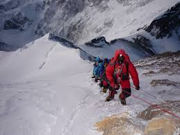

The Discovery of the Highest Point on Earth
Mount Everest was identified as the highest mountain in the world during the Great Trigonometrical Survey of India in the 19th century. At the time, it was labeled “Peak XV” before being renamed in honor of Sir George Everest, a British surveyor involved in mapping the region.
During this period, much of the Himalayas remained unexplored and poorly documented. Early maps were incomplete, and the region was considered remote, mysterious, and extremely difficult to access.
Early Exploration Attempts
The first expeditions to Everest faced extreme challenges. Explorers had no modern climbing gear, limited knowledge of high-altitude conditions, and little understanding of how the human body reacts to low oxygen levels.
Many early attempts failed due to harsh weather, avalanches, and exhaustion caused by altitude sickness. Some expeditions never returned, highlighting the extreme danger of the mountain.
Despite these risks, the desire to reach the summit continued to grow, driven by curiosity and human ambition.
The First Successful Ascent (1953)
On May 29, 1953, Sir Edmund Hillary and Tenzing Norgay became the first climbers to successfully reach the summit of Mount Everest. This historic achievement marked one of the greatest milestones in human exploration.
Their success was the result of careful planning, teamwork, and the use of oxygen systems and specialized equipment. They were supported by a large expedition team, including many Sherpas who played a crucial role in the climb.
This moment transformed Everest from an unreachable mystery into a global symbol of human determination.
The Modern Climbing Era
Since the late 20th century, Mount Everest has become more accessible due to advancements in technology, weather forecasting, and commercial expedition services.
Thousands of climbers now attempt to reach the summit each year. While this has made Everest more popular, it has also introduced challenges such as overcrowding, environmental impact, and safety concerns.
Today, the mountain is carefully managed, but it remains one of the most dangerous and respected climbing destinations in the world.
Cultural and Environmental Significance
Mount Everest holds deep cultural meaning for the people of Nepal and Tibet. Known locally as Sagarmatha and Chomolungma, it is considered sacred and respected as more than just a physical landmark.
In recent years, environmental concerns have grown due to increased tourism and climbing activity. Efforts are now being made to reduce waste and protect the fragile ecosystem of the Himalayas.
